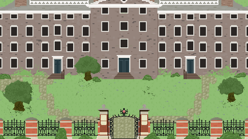

Tyler Gurth
Brown Univeristy, co 2025
About Me
19 yrs old, he/him.
Hi! My name is Tyler Gurth, and I am currently double majoring in Computer Science and History of Art and Architecture at Brown University.
I am versed in Python, Java, HTML, CSS, JavaScript, and Pyret. At Brown, I'm in the graphics and AI track.
My interests lie in game development, software engineering, UI/UX, and my research interests lie in art through artificial intelligence, and art identification through AI.
Feel free to reach out on any of my socials at any time, I am always up to connect!
The Quiet Green

The Quiet Green is a bit-style rpg game surrounding Brown University's front quad. The game, written entirely in HTML, JS, and CSS, works to provide a small educational tour for players (ideally, new students), as they tour around the green as a Brown Band member. Talking to different NPCs starts a dialogue quest line, used as a means to educate players.
The Virtual Rosetta

The Virtual Rosetta is a research project I'm working on this summer. It involves a lot of data management and hierarchical clustering. We are trying to use different data visualization techniques to learn about Vietnamese society in the early 20th century.
Escape Room Panel

I made a custom Escape Room panel for my current employer, and I intend on making custom panels for other companies too. It involved a lot of unique features tailored to my employer.